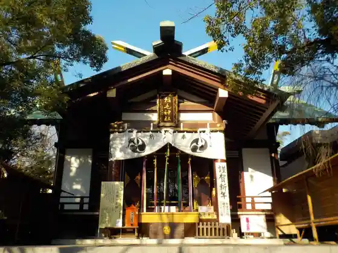
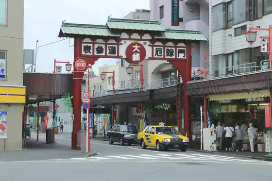
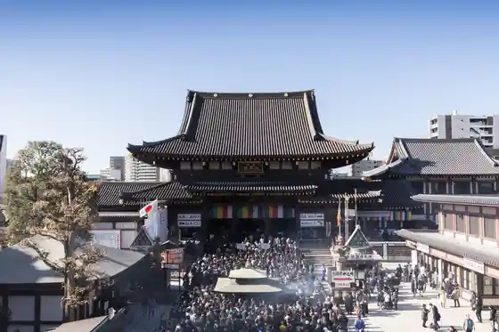
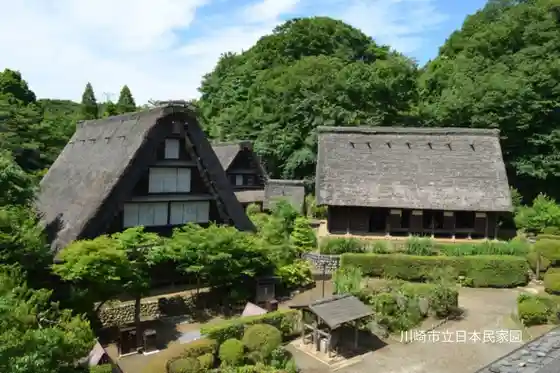

Inage Shrine
Kawasakishi, Kanagawa · 044-222-4554 · Official / source link

Kawasakishi Taishi Omotesando
Kawasakishi, Kanagawa · Official / source link

Kawasakishi Taishi Hirama Tera
Kawasakishi, Kanagawa · 044-266-3420 · Official / source link

Kawasakishi Ritsu Nippon Minka Sono
Kawasakishi, Kanagawa · 044-922-2181 · Official / source link

Kawasakishi Fujiko F Fujio Museum
Kawasakishi, Kanagawa · 0570-055-245 · Official / source link
Kawasakishi Ryokka Center
Kawasakishi, Kanagawa · 044-911-2177 · Official / source link
Taishi Park
Kawasakishi, Kanagawa · 044-276-0050 · Official / source link
Nigaryo Yosui Kuji Ento Bunsui
Kawasakishi, Kanagawa · 044-544-8229 · Official / source link
Nigaryo Yosui Soi Promenade
Kawasakishi, Kanagawa · 044-200-2380 · Official / source link
Kawasakishi Okamoto Taro Art Museum
Kawasakishi, Kanagawa · 044-900-9898 · Official / source link
Club Chitta
Kawasakishi, Kanagawa · 044-246-8888 · Official / source link
Domoto Seika Honshakojo
Kawasakishi, Kanagawa · 044-222-2454 · Official / source link
Kawasakishi Kokusaikoryu Center
Kawasakishi, Kanagawa · 044-435-7000 · Official / source link
Kawasakishi Marien
Kawasakishi, Kanagawa · 044-287-6000 · Official / source link
Kawasakishi Taishi Nakamise Tori
Kawasakishi, Kanagawa · 044-277-0757 · Official / source link
Kawasakishi Kako Suimon
Kawasakishi, Kanagawa · Official / source link
Ra Chittaderra
Kawasakishi, Kanagawa · 044-223-2333 · Official / source link
Tokaido Kawasaki Yado Koryu Kan
Kawasakishi, Kanagawa · 044-280-7321 · Official / source link
Futako Shrine
Kawasakishi, Kanagawa · Official / source link
Nitta Shrine
Kawasakishi, Kanagawa · Official / source link
Kawasakishi Kojo Yakei Yakatabune Kuruzu
Kawasakishi, Kanagawa · 050-3498-0748 · Official / source link
Choja Ana Yokoana Burial Mound
Kawasakishi, Kanagawa · Official / source link
Hisamoto Yakui Mon Park
Kawasakishi, Kanagawa · Official / source link
Matcho Kumano Mori Ryokuchi (Edo Ken Sakura Tazan no Ki)
Kawasakishi, Kanagawa · Official / source link
Kuji Umebayashi Park
Kawasakishi, Kanagawa · Official / source link
Egawa Seseragi Promenade
Kawasakishi, Kanagawa · 044-788-2311 · Official / source link
Chidori Park
Kawasakishi, Kanagawa · 044-287-6034 · Official / source link
Kotohira Shrine
Kawasakishi, Kanagawa · 044-988-0045 · Official / source link
Shirahata Hachiman Daijin
Kawasakishi, Kanagawa · 044-977-5639 · Official / source link
Tsukuyomi Shrine
Kawasakishi, Kanagawa · 042-735-5617 · Official / source link
Joraku Tera (Manga Tera)
Kawasakishi, Kanagawa · Official / source link
Saimyo Tera
Kawasakishi, Kanagawa · Official / source link
Aso Fudo In (Tokusa Fudo)
Kawasakishi, Kanagawa · Official / source link
Migawari Fudo Mikoto Kawasakishi Honzan
Kawasakishi, Kanagawa · 044-865-8111 · Official / source link
Jokei Tera
Kawasakishi, Kanagawa · 044-988-1223 · Official / source link
Hayano Seichi Koen to Nanatsu Ike
Kawasakishi, Kanagawa · 044-987-6120 · Official / source link
Tonosama no Haka
Kawasakishi, Kanagawa · Official / source link
Razo ― Na Kawasakishi Plaza
Kawasakishi, Kanagawa · 044-874-8000 · Official / source link
Sato Honjin Ato
Kawasakishi, Kanagawa · Official / source link
Sho Doro Hashi Ato
Kawasakishi, Kanagawa · Official / source link
Taishi Kawara Higata Kan
Kawasakishi, Kanagawa · 044-287-7882 · Official / source link
Basho no Kuhi
Kawasakishi, Kanagawa · Official / source link
Okamoto Ka no Shibun Gaku Hi (Hokori)
Kawasakishi, Kanagawa · 044-900-9898 · Official / source link
Tokaku In (Tsutsuji Tera)
Kawasakishi, Kanagawa · 044-866-4573 · Official / source link
Ishi Kannon Do
Kawasakishi, Kanagawa · Official / source link
Kunikida Doppo no Hi
Kawasakishi, Kanagawa · Official / source link
Shinshu Tera Kawasakishi Reien Shoro Do
Kawasakishi, Kanagawa · 044-965-0965 · Official / source link
Daisekikyo
Kawasakishi, Kanagawa · Official / source link
Todoroki Ryokuchi
Kawasakishi, Kanagawa · Official / source link
Kamei Rokuro Yashikiato
Kawasakishi, Kanagawa · Official / source link
Tachibana Kodai no Oka Ryokuchi
Kawasakishi, Kanagawa · Official / source link
Kitsuju Jinja to Fujimidai Burial Mound
Kawasakishi, Kanagawa · Official / source link
Shibokuchi Kaizuka
Kawasakishi, Kanagawa · Official / source link
Mizoguchi Shrine
Kawasakishi, Kanagawa · Official / source link
Kakio Kyodoshi Ryo Kan
Kawasakishi, Kanagawa · Official / source link
Sakuramoto Kyu Fukujin
Kawasakishi, Kanagawa · Official / source link
Kako Higata Teibo Sakura
Kawasakishi, Kanagawa · Official / source link
Midorigaoka Reien
Kawasakishi, Kanagawa · 044-813-1182 · Official / source link
Kawasakishi Keibajo (Keiba Kansen)
Kawasakishi, Kanagawa · 044-233-6701 · Official / source link
Kashima Sono
Kawasakishi, Kanagawa · 044-777-0923 · Official / source link
Kawasakishi Keibajo Babekyu Ba
Kawasakishi, Kanagawa · 044-233-6708 · Official / source link
Kawasakishi Koriataun (Yakiniku)
Kawasakishi, Kanagawa · 044-200-2327 · Official / source link
Tamagawa Unane Park Gorufu
Kawasakishi, Kanagawa · 044-833-0115 · Official / source link
Kawasaki Chu to Midori no Science Museum (Puranetariumu)
Kawasakishi, Kanagawa · 044-922-4731 · Official / source link
Kawasakishi Minato Kaitei Tonneru
Kawasakishi, Kanagawa · 044-287-6034 · Official / source link
Mitsutoyo Sokutei Museum (Numata Memorial Museum Sokuteiki Utsuwa Kan)
Kawasakishi, Kanagawa · 044-813-8204 · Official / source link
Higashi Ogi Shima Higashi Park
Kawasakishi, Kanagawa · 044-287-6034 · Official / source link
Katsu Park Saginuma (Saginuma Fureai Plaza)
Kawasakishi, Kanagawa · 044-200-3356 · Official / source link
Sugo Ryokuchi
Kawasakishi, Kanagawa · 044-877-1661 · Official / source link
to Hana Raku Workshop
Kawasakishi, Kanagawa · 044-722-3993 · Official / source link
Kureha Kankyo Uesutekku Kanagawa
Kawasakishi, Kanagawa · 044-280-3810 · Official / source link
Kawasakishi Kankyo Sogokenkyusho
Kawasakishi, Kanagawa · 044-276-9001 · Official / source link
Kawasakishi Daikibo Taiyokohatsuden Tokoro
Kawasakishi, Kanagawa · Official / source link
Kawasakishi Tami Ishi Ken Puranto
Kawasakishi, Kanagawa · 044-276-0739 · Official / source link
Kawasaki Eko Kurashi Mirai Kan
Kawasakishi, Kanagawa · 044-223-8869 · Official / source link
Tonmori Tanito
Kawasakishi, Kanagawa · Official / source link
Minamino Kawa Fureai Forest
Kawasakishi, Kanagawa · Official / source link
Bonerundo Asobi no Sekai Gurantsurii Musashikosugi Mise
Kawasakishi, Kanagawa · 044-982-3221 · Official / source link
Kanagawa Prefectural Higashiko Ne Forest Park
Kawasakishi, Kanagawa · Official / source link
FISH ON Ozenji
Kawasakishi, Kanagawa · 044-959-0037 · Official / source link
Yumemigasaki Dobutsu Park
Kawasakishi, Kanagawa · Official / source link
Ame Kiri Experience
Kawasakishi, Kanagawa · 044-277-7711 · Official / source link
Kawasakishi Oyama Kaido Furusato Kan
Kawasakishi, Kanagawa · 044-813-4705 · Official / source link
Kawasakishi Ato Center
Kawasakishi, Kanagawa · 044-955-0107 · Official / source link
Oguro Keiko Doyo Memorial Museum
Kawasakishi, Kanagawa · 044-381-3490 · Official / source link
Kawasakishi DICE
Kawasakishi, Kanagawa · 044-223-3490 · Official / source link
Myuza Kawasakishi Shinfoniihoru
Kawasakishi, Kanagawa · 044-520-0100 · Official / source link
Kawasakishi Azeria
Kawasakishi, Kanagawa · 044-211-3871 · Official / source link
Teatoro Jiirio Showa
Kawasakishi, Kanagawa · 044-953-9875 · Official / source link
Gurantsurii Musashikosugi
Kawasakishi, Kanagawa · 044-411-7111 · Official / source link
Kago Kuchi no Ike Oyobi Keshomen Tani Park
Kawasakishi, Kanagawa · 044-200-2327 · Official / source link
Otsu Koshi Yama Fureai Forest
Kawasakishi, Kanagawa · 044-200-2327 · Official / source link
Ekimae Fujiya Ato
Kawasakishi, Kanagawa · 044-965-5113 · Official / source link
Gin Yanagi Machi
Kawasakishi, Kanagawa · Official / source link
Tachibana Onsen Tachibana Yu
Kawasakishi, Kanagawa · 044-788-4399 · Official / source link
Togei Kyoshitsu Sakura Tobo
Kawasakishi, Kanagawa · Official / source link
Motoki Noen Ichigo Kari
Kawasakishi, Kanagawa · 080-1984-9293 · Official / source link
Kanayama Shrine
Kawasakishi, Kanagawa · 044-222-3206 · Official / source link
Oyama Kaido
Kawasakishi, Kanagawa · Official / source link
Ozenji Eko Kurashi Kankyo Kan
Kawasakishi, Kanagawa · 044-712-4637 · Official / source link
Ozenji Miharashi Park
Kawasakishi, Kanagawa · 044-965-5113 · Official / source link
Ozenji Furusato Park
Kawasakishi, Kanagawa · 044-954-0505 · Official / source link
Hosei Tori Shopping Street
Kawasakishi, Kanagawa · 044-722-8335 · Official / source link
Motosumi Buremen Tori Shopping Street
Kawasakishi, Kanagawa · Official / source link
Motosumi Ozu Tori Shopping Street
Kawasakishi, Kanagawa · Official / source link
Yomiuri Land
Kawasakishi, Kanagawa · 044-966-1111 · Official / source link
Kaiju Sakaba
Kawasakishi, Kanagawa · 044-210-5565 · Official / source link
Kawasakishi Keirinjo
Kawasakishi, Kanagawa · 044-233-5501 · Official / source link
Keihin Fushimi Inari Shrine
Kawasakishi, Kanagawa · 044-411-4110 · Official / source link
BOULCOM Kawasakishi Mise
Kawasakishi, Kanagawa · Official / source link
Kawasui Kawasakishi Aquarium
Kawasakishi, Kanagawa · 044-201-7921 · Official / source link
Kawasakishi Nogyo Gijutsushien Center (Kyu : Kawasakishi Furutsu Park)
Kawasakishi, Kanagawa · 044-945-0153 · Official / source link
Sumiyoshi Zakura
Kawasakishi, Kanagawa · 044-744-3161 · Official / source link
Kyuju Mochi Honpo Sumiyoshi
Kawasakishi, Kanagawa · 044-288-4437 · Official / source link
Noen Pateisurii Slow Sweets (Kawasakishi Aso Ku)
Kawasakishi, Kanagawa · 044-322-9492 · Official / source link
Domoto Motoki Main Shop
Kawasakishi, Kanagawa · 044-222-2454 · Official / source link
Ikuta Ryokuchi
Kawasakishi, Kanagawa · 044-933-2300 · Official / source link
Miyamaedaira Gensen Yu Kemuri no Sho
Kawasakishi, Kanagawa · 044-860-2641 · Official / source link
Mizoguchi Onsen Kiraku Sato
Kawasakishi, Kanagawa · 044-741-4126 · Official / source link
saunahouse (Saunahausu)
Kawasakishi, Kanagawa · Official / source link
Ikuta Ryokuchi Bara En
Kawasakishi, Kanagawa · Official / source link
Myoraku Tera
Kawasakishi, Kanagawa · Official / source link
Kurokawa Himawari Hatake no Kaiho & Tsumi Tori Experience
Kawasakishi, Kanagawa · Official / source link
Yomiuri Land Puru WAI (Water Amusement Island)
Kawasakishi, Kanagawa · 044-966-1111 · Official / source link
Soba Tokoro Shirakawa Sato
Kawasakishi, Kanagawa · 044-932-7747 · Official / source link
Razona Kawasakishi Plaza
Kawasakishi, Kanagawa · 044-874-8000 · Official / source link
The WAREHOUSE BUSINESS LOUNGE & CAFE
Kawasakishi, Kanagawa · 044-280-1090 · Official / source link